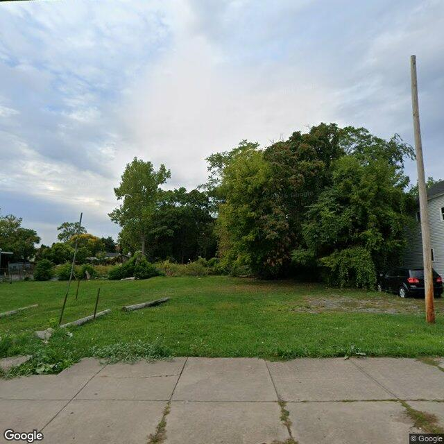

Property entry
1414 Salina St N
Published 2026-05-31T09:13:41+00:00
Parcel key: 002-24-180

wooden posts on ground · mediumAI image read
The image shows a vacant grassy lot with mature trees in the background and some wooden posts lying on the ground.
Property type guess: vacant_lot
Visible conditions
- The parcel appears to be a vacant lot with grass and mature trees.
- Several wooden posts or logs are lying on the ground on the left side of the lot.
- A vehicle is parked on the right side of the lot near an adjacent building structure.
Condition scores
- Roof
- not_visible
- Siding Or Facade
- not_visible
- Windows Doors
- not_visible
- Porch Or Entry
- not_visible
- Yard Or Lot
- fair
- Trash Debris
- minor
- Vegetation Overgrowth
- minor
Visible flags
- Boarded Windows Or Doors
- no
- Fire Damage Visible
- no
- Structural Damage Visible
- no
- Vacancy Signs Visible
- no
- Active Construction Visible
- no
Possible image-only flags
- There is a discrepancy between the public records (which list rental registry and unfit property records, implying a structure) and the image, which shows only a vacant lot. The structure may have been demolished.
AI review boxes
- wooden posts on ground: Fallen wooden posts or logs lying on the grass surface
Review reasons
- AI requested human review
- Possible image-only issue
Image quality
- Available
- True
- Bytes
- 69199
- Needs Rerun
- False
['The image shows an entirely vacant lot, whereas public records indicate active rental registry and unfit property records. This suggests either a recent demolition has occurred, or the camera angle is capturing an adjacent vacant parcel instead of the registered structure.']
ACS tract context
Census Tract 2; Onondaga County; New York
- Total population
- 3511
- Median household income
- 51848
- Poverty rate
- 28.1
- Housing units
- 1686
- Vacancy rate
- 14.7
- Renter-occupied share
- 50.1
- Median gross rent
- 146700
OpenStreetMap nearby
60 meter search radius
Summary
- 14 mapped building footprints
- 1 land-use: commercial
- 1 land-use: industrial
- 1 land-use: residential
Notable mapped features
- landuse: commercialway #1189921493
- landuse: industrialway #1189921494
- landuse: residentialway #1189921501
Vacant properties 1
- Latitude
- 43.06834453
- Longitude
- -76.1606094
- ObjectId
- 960
- Owner
- Receipt Book LLC
- OwnerAddress
- 1400 N Salina St Syracuse, NY 13203
- PropertyAddress
- 1400 Salina St N & Turtle St
Rental registry 2
- Latitude
- 43.06861396
- Longitude
- -76.16047641
- NeedsRR
- Yes
- ObjectId
- 746
- PropertyAddress
- 313 Turtle St
- RR_app_received
- 1740355200000
- Latitude
- 43.06853458
- Longitude
- -76.16053582
- NeedsRR
- Yes
- ObjectId
- 748
- PropertyAddress
- 311 Turtle St
- RR_app_received
- 1706054400000
Code violations 0
No matching records found in this feed.
Unfit properties 2
- Latitude
- 43.06834453
- Longitude
- -76.1606094
- ObjectId
- 163
- SBL
- 002.-24-15.0
- address
- 1400 Salina St N & Turtle St
- area_involved
- Premises
- Latitude
- 43.06834453
- Longitude
- -76.1606094
- ObjectId
- 164
- SBL
- 002.-24-15.0
- address
- 1400 Salina St N & Turtle St
- area_involved
- Premises